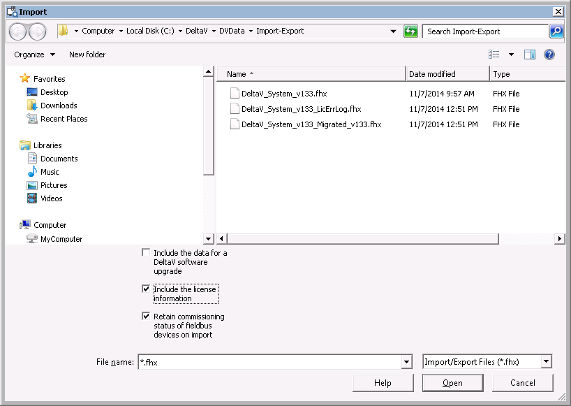

Retaining the commissioning status of fieldbus devices during a partial import
The commissioning status of fieldbus devices (commissioned, decommissioned-offline, decommissioned-spare, and decommissioned-standby) can be retained during a standard import of an entire DeltaV system when the Include the data for a DeltaV software upgrade option is selected on the Import dialog. It is also possible to retain the commissioning status of fieldbus devices during a partial import of the DeltaV system. A partial import includes single or multiple devices, H1 cards, or controllers. To retain the commissioning status of fieldbus devices during a partial import, select the Retain commissioning status of fieldbus devices on import option on the Import dialog. In the DeltaV Explorer, click to access the Import dialog.

The option to retain commissioning status is useful because fieldbus devices can be commissioned and tested at the device vendor's facility and then delivered to the plant in a ready-to-use state. The Retain commissioning status for fieldbus devices on import option eliminates the need to commission devices twice: once at the vendor's facility and again at the plant.
There are a few things to keep in mind when using this option:
The same version of the DeltaV software must be used for the export and for the import
The hardware used for the imported configuration must match the hardware used for the exported configuration
After importing, download the port
Device tag names and function block names must be unique to the exported and target configurations